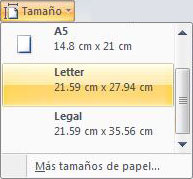
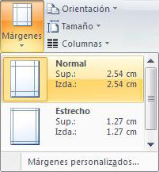
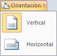

Configuración del documento
La configuración de un documento significa definir los tamaños, márgenes y orientación de un documento. Existen más opciones de configuración, pero esas las veremos dentro de los temas de cada aplicación.
La aplicación define cierto tamaño, orientación y márgenes en todos los documentos. Pero usted puede cambiar esto, es decir, puede cambiar la Configuración.
Tamaño
Lo normal es tamaño carta
Puede cambiarlo a tamaño oficio, que puede ser el tamaño del papel donde va a imprimir.
Márgenes
Lo normal es 2.54cm
Puede hacer los márgenes más grandes o más chicos.
Orientación
Lo normal es Vertical
Puede cambiarlo a forma horizontal.
Elija la opción de Office que tiene instalada en su computadora